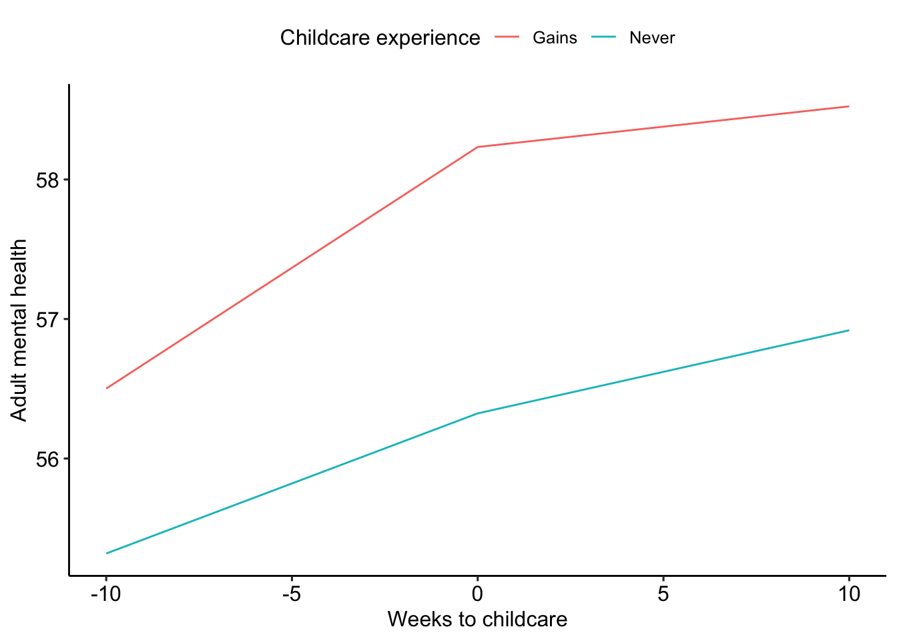

Caregivers were considered to not have childcare if:
Caregivers were considered to have childcare if they reported using any of the following:
Note: these questions were asked in weeks 5, 6, 9-current.
From Olmos & Govindasamy (2015):
Propensity score weighting is one of the techniques used in controlling for selection biases in non-experimental studies. Propensity scores can be used as weights to account for selection assignment differences between treatment and comparison groups. One of the advantages of this approach is that all the individuals in the study can be used for the outcomes evaluation.
An individual’s propensity for for gaining childcare (versus never having childcare) was determined by a linear model including caregiver race (Black versus not), ethnicity (Latinx versus not), family income relative to 150% of the federal poverty level, caregiver age, whether the caregiver was single, state of residence, language in which they completed the RAPID survey, the number of children in the household, and the type of health insurance covering the child’s healthcare.
| effect | term | estimate | std.error | statistic | conf.low | conf.high |
|---|---|---|---|---|---|---|

| effect | term | estimate | std.error | statistic | conf.low | conf.high |
|---|---|---|---|---|---|---|